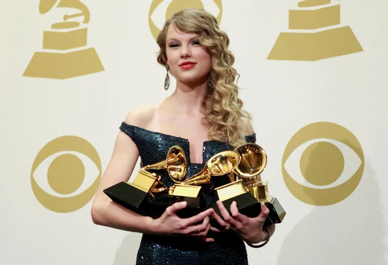

Grammy
AWARDS
O Grammy Awards é uma premiação anual em que a National Academy of Recording Arts and Sciences dos EUA elege os artistas que mais se destacaram com gravações musicais.
Apesar de existirem diversas categorias o prêmio que mais se detaca é o AOTY (album of the year - álbum do ano)

A primeira vez em que Taylor venceu na categoria foi em 2010, com seu segundo álbum country "Fearless" com 19 anos.